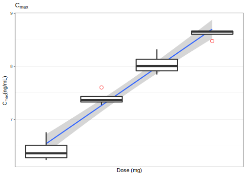
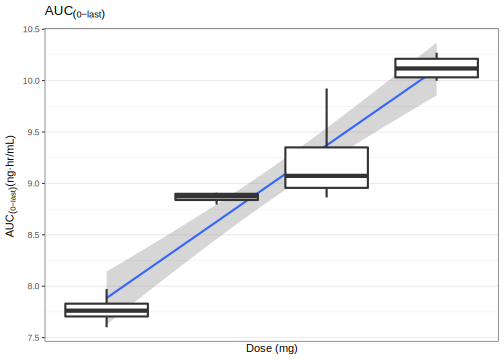

7 통계처리
7.2 기술통계량 구하기
앞서 3장에서 구한 Theoph_nca를 갖고 기술 통계량 (평균, 표준편차, 최소값, 최대값, skewness, kurtosis)을 구해보겠습니다. psych::describe() 함수를 사용하면 간단히 구할 수 있습니다.
desc_stat_Theoph_nca <- describe(Theoph_nca) %>%
select(n, mean, sd, min, max, skew, kurtosis)
knitr::kable(desc_stat_Theoph_nca, digits = 2)| n | mean | sd | min | max | skew | kurtosis | |
|---|---|---|---|---|---|---|---|
| ID* | 12 | 6.50 | 3.61 | 1.00 | 12.00 | 0.00 | -1.50 |
| b0* | 12 | 2.39 | 0.25 | 2.03 | 2.82 | 0.13 | -1.38 |
| CMAX* | 12 | 8.76 | 1.47 | 6.44 | 11.40 | 0.21 | -1.19 |
| CMAXD* | 12 | 0.03 | 0.00 | 0.02 | 0.04 | 0.21 | -1.19 |
| TMAX* | 12 | 1.79 | 1.11 | 0.63 | 3.55 | 0.70 | -1.35 |
| TLAG* | 12 | 0.00 | 0.00 | 0.00 | 0.00 | NaN | NaN |
| CLST* | 12 | 1.40 | 0.72 | 0.86 | 3.28 | 1.57 | 1.14 |
| CLSTP* | 12 | 1.40 | 0.72 | 0.86 | 3.28 | 1.58 | 1.19 |
| TLST* | 12 | 24.20 | 0.25 | 23.70 | 24.65 | -0.28 | -0.57 |
| LAMZHL* | 12 | 8.18 | 2.12 | 6.29 | 14.30 | 1.90 | 2.97 |
| LAMZ* | 12 | 0.09 | 0.02 | 0.05 | 0.11 | -0.92 | 0.40 |
| LAMZLL* | 12 | 7.49 | 2.40 | 2.03 | 9.38 | -1.20 | -0.03 |
| LAMZUL* | 12 | 24.20 | 0.25 | 23.70 | 24.65 | -0.28 | -0.57 |
| LAMZNPT* | 12 | 3.83 | 1.34 | 3.00 | 7.00 | 1.32 | 0.28 |
| CORRXY* | 12 | -1.00 | 0.00 | -1.00 | -1.00 | 2.20 | 3.87 |
| R2* | 12 | 1.00 | 0.00 | 0.99 | 1.00 | -2.20 | 3.87 |
| R2ADJ* | 12 | 1.00 | 0.00 | 0.99 | 1.00 | -2.05 | 3.39 |
| AUCLST* | 12 | 103.81 | 23.65 | 73.78 | 148.92 | 0.56 | -1.12 |
| AUCALL* | 12 | 103.81 | 23.65 | 73.78 | 148.92 | 0.56 | -1.12 |
| AUCIFO* | 12 | 122.19 | 38.13 | 84.25 | 216.61 | 1.25 | 0.51 |
| AUCIFOD* | 12 | 0.38 | 0.12 | 0.26 | 0.68 | 1.25 | 0.51 |
| AUCIFP* | 12 | 122.18 | 38.11 | 84.50 | 216.61 | 1.26 | 0.52 |
| AUCIFPD* | 12 | 0.38 | 0.12 | 0.26 | 0.68 | 1.26 | 0.52 |
| AUCPEO* | 12 | 13.54 | 6.35 | 8.13 | 31.25 | 1.71 | 2.19 |
| AUCPEP* | 12 | 13.54 | 6.34 | 8.16 | 31.25 | 1.72 | 2.23 |
| AUMCLST* | 12 | 883.06 | 262.98 | 609.15 | 1459.07 | 0.92 | -0.42 |
| AUMCIFO* | 12 | 1590.30 | 1006.57 | 928.56 | 4505.53 | 2.00 | 2.96 |
| AUMCIFP* | 12 | 1589.85 | 1006.06 | 928.49 | 4505.67 | 2.01 | 2.97 |
| AUMCPEO* | 12 | 38.72 | 11.10 | 26.50 | 67.62 | 1.29 | 1.10 |
| AUMCPEP* | 12 | 38.72 | 11.07 | 26.59 | 67.62 | 1.30 | 1.14 |
| MRTEVLST* | 12 | 8.41 | 0.59 | 7.71 | 9.80 | 0.99 | 0.12 |
| MRTEVIFO* | 12 | 12.29 | 2.96 | 9.98 | 20.80 | 1.90 | 2.83 |
| MRTEVIFP* | 12 | 12.29 | 2.95 | 9.95 | 20.80 | 1.91 | 2.84 |
| VZFO* | 12 | 31.93 | 6.47 | 22.22 | 43.26 | 0.20 | -1.40 |
| VZFP* | 12 | 31.92 | 6.46 | 22.22 | 43.14 | 0.19 | -1.41 |
| CLFO* | 12 | 2.81 | 0.68 | 1.48 | 3.80 | -0.45 | -0.93 |
| CLFP* | 12 | 2.81 | 0.68 | 1.48 | 3.79 | -0.46 | -0.93 |
7.3 생물학적 동등성
생물학적 동등성을 위한 가장 간단한 방법은 BE 패키지(Bae 2018)를 쓰는 것입니다.
Chow와 Liu의 책의 내용을 충실히 반영하였습니다. (Chow and Liu 2008) 생물학적 동등성을 위한 수학 식은 다음과 같습니다. (7.1)
\[\begin{equation} \begin{split} 0.8 < 90\%\ CI\ of\ \frac{GM(AUC_{last, test})}{GM(AUC_{last, ref})} < 1.25 \\ 0.8 < 90\%\ CI\ of\ \frac{GM(AUC_{last, test})}{GM(AUC_{last, ref})} < 1.25 \tag{7.1} \end{split} \end{equation}\]
현재로서는 2x2 디자인의 간단한 임상시험 디자인만을 지원하고 있습니다. (그림 7.1)
핵심이 되는 함수는 beNCA() 입니다.

Figure 7.1: 전형적인 2x2 설계
## function (Data, Columns = c("AUClast", "Cmax", "Tmax"), rtfName = "")
## NULL다음과 같은 함수 인자를 설정해 주면 됩니다.
- SUBJ: Subject ID, any data type
- GRP: column name in which information of “RT” or “TR” exists.
- PRD: column name in which information of 1 or 2 exists.
- TRT: column name in which information of “R” or “T” exists.
- method:
kbeby authors ornlmepackage uploaded on CRAN
ncarbe 패키지 내에 있는 자료를 사용할 것입니다. (Table 7.1)
| SUBJ | GRP | PRD | TRT | AUClast | Cmax | Tmax |
|---|---|---|---|---|---|---|
| 1 | RT | 1 | R | 5018.927 | 1043.13 | 1.04 |
| 1 | RT | 2 | T | 6737.507 | 894.21 | 1.03 |
| 2 | TR | 1 | T | 4373.970 | 447.26 | 1.01 |
| 2 | TR | 2 | R | 6164.276 | 783.92 | 1.98 |
| 4 | TR | 1 | T | 5592.993 | 824.42 | 1.97 |
| 4 | TR | 2 | R | 5958.160 | 646.31 | 0.97 |
| 5 | TR | 1 | T | 3902.590 | 803.70 | 0.80 |
| 5 | TR | 2 | R | 4620.156 | 955.30 | 0.74 |
| 6 | RT | 1 | R | 3735.274 | 995.34 | 1.02 |
| 6 | RT | 2 | T | 4257.802 | 816.33 | 1.00 |
| 7 | RT | 1 | R | 4314.993 | 608.99 | 0.95 |
| 7 | RT | 2 | T | 5030.372 | 806.57 | 0.74 |
| 8 | RT | 1 | R | 6053.098 | 1283.67 | 0.72 |
| 8 | RT | 2 | T | 5790.067 | 822.95 | 1.03 |
| 9 | RT | 1 | R | 4602.582 | 679.39 | 0.74 |
| 9 | RT | 2 | T | 6042.462 | 556.55 | 0.98 |
| 10 | RT | 1 | R | 8848.988 | 1136.91 | 1.03 |
| 10 | RT | 2 | T | 7349.822 | 1082.79 | 0.97 |
| 11 | TR | 1 | T | 3054.096 | 547.73 | 2.02 |
| 11 | TR | 2 | R | 4719.175 | 984.69 | 0.54 |
| 13 | RT | 1 | R | 4828.682 | 615.17 | 1.00 |
| 13 | RT | 2 | T | 4175.434 | 692.26 | 0.97 |
| 14 | RT | 1 | R | 4566.275 | 864.56 | 1.03 |
| 14 | RT | 2 | T | 5042.649 | 1122.75 | 0.75 |
| 15 | TR | 1 | T | 4950.980 | 719.40 | 0.97 |
| 15 | TR | 2 | R | 4959.554 | 660.17 | 0.96 |
| 16 | RT | 1 | R | 4577.432 | 609.64 | 3.01 |
| 16 | RT | 2 | T | 4773.723 | 807.65 | 1.01 |
| 17 | RT | 1 | R | 6462.652 | 861.56 | 2.02 |
| 17 | RT | 2 | T | 5246.032 | 1187.75 | 0.73 |
| 18 | TR | 1 | T | 4754.625 | 919.87 | 0.77 |
| 18 | TR | 2 | R | 3214.809 | 1042.84 | 0.53 |
| 19 | TR | 1 | T | 7619.304 | 1089.84 | 3.00 |
| 19 | TR | 2 | R | 5210.569 | 1127.94 | 2.04 |
| 20 | TR | 1 | T | 5063.471 | 1191.46 | 0.71 |
| 20 | TR | 2 | R | 6406.634 | 1069.19 | 1.00 |
| 21 | RT | 1 | R | 5580.289 | 742.67 | 0.97 |
| 21 | RT | 2 | T | 6304.119 | 447.85 | 0.99 |
| 22 | RT | 1 | R | 4398.887 | 682.73 | 2.02 |
| 22 | RT | 2 | T | 3760.359 | 669.01 | 1.04 |
| 23 | TR | 1 | T | 5141.165 | 937.02 | 0.51 |
| 23 | TR | 2 | R | 5835.275 | 894.72 | 1.04 |
| 24 | TR | 1 | T | 4343.439 | 713.57 | 1.03 |
| 24 | TR | 2 | R | 2848.448 | 811.83 | 0.71 |
| 25 | TR | 1 | T | 3983.260 | 1160.32 | 0.73 |
| 25 | TR | 2 | R | 3476.389 | 769.63 | 0.78 |
| 27 | TR | 1 | T | 5772.972 | 1219.56 | 0.99 |
| 27 | TR | 2 | R | 7673.260 | 1063.29 | 1.03 |
| 28 | RT | 1 | R | 5679.039 | 650.24 | 1.00 |
| 28 | RT | 2 | T | 5160.875 | 891.63 | 1.05 |
| 29 | TR | 1 | T | 4800.455 | 770.63 | 2.02 |
| 29 | TR | 2 | R | 5772.925 | 738.17 | 1.04 |
| 30 | RT | 1 | R | 4722.324 | 1034.11 | 0.77 |
| 30 | RT | 2 | T | 2896.939 | 569.22 | 1.03 |
| 31 | RT | 1 | R | 8032.393 | 1043.82 | 1.98 |
| 31 | RT | 2 | T | 6076.359 | 1141.43 | 0.96 |
| 32 | TR | 1 | T | 4245.372 | 608.93 | 2.97 |
| 32 | TR | 2 | R | 4745.770 | 539.66 | 2.04 |
| 33 | TR | 1 | T | 3648.195 | 856.18 | 0.76 |
| 33 | TR | 2 | R | 3356.777 | 647.95 | 0.98 |
| 34 | TR | 1 | T | 5015.499 | 739.42 | 0.96 |
| 34 | TR | 2 | R | 6325.746 | 682.41 | 1.99 |
| 35 | RT | 1 | R | 6259.347 | 1020.55 | 1.96 |
| 35 | RT | 2 | T | 5802.468 | 835.87 | 2.04 |
| 36 | RT | 1 | R | 4669.384 | 682.87 | 3.01 |
| 36 | RT | 2 | T | 3783.584 | 729.63 | 1.00 |
배균섭 교수님의 강의 자료에서 가져왔습니다.
## $AUClast
## $AUClast$`Analysis of Variance (log scale)`
## SS DF MS F p
## SUBJECT 2.875497e+00 32 8.985928e-02 3.183942248 0.0008742828
## GROUP 1.024607e-01 1 1.024607e-01 1.145416548 0.2927731856
## SUBJECT(GROUP) 2.773036e+00 31 8.945279e-02 3.169539016 0.0009544080
## PERIOD 3.027399e-05 1 3.027399e-05 0.001072684 0.9740824428
## DRUG 3.643467e-02 1 3.643467e-02 1.290972690 0.2645764201
## ERROR 8.749021e-01 31 2.822265e-02
## TOTAL 3.786834e+00 65
##
## $AUClast$`Between and Within Subject Variability`
## Between Subject Within Subject
## Variance Estimate 0.03061507 0.02822265
## Coefficient of Variation, CV(%) 17.63193968 16.91883011
##
## $AUClast$`Least Square Means (geometric mean)`
## Reference Drug Test Drug
## Geometric Means 5092.098 4858.245
##
## $AUClast$`90% Confidence Interval of Geometric Mean Ratio (T/R)`
## Lower Limit Point Estimate Upper Limit
## 90% CI for Ratio 0.889436 0.9540753 1.023412
##
## $AUClast$`Sample Size`
## True Ratio=1 True Ratio=Point Estimate
## 80% Power Sample Size 6 7
##
##
## $Cmax
## $Cmax$`Analysis of Variance (log scale)`
## SS DF MS F p
## SUBJECT 2.861492e+00 32 8.942162e-02 2.237604579 0.01367095
## GROUP 9.735789e-05 1 9.735789e-05 0.001054764 0.97429977
## SUBJECT(GROUP) 2.861394e+00 31 9.230304e-02 2.309706785 0.01131826
## PERIOD 4.717497e-03 1 4.717497e-03 0.118046317 0.73348258
## DRUG 6.837756e-03 1 6.837756e-03 0.171101730 0.68198228
## ERROR 1.238856e+00 31 3.996310e-02
## TOTAL 4.112258e+00 65
##
## $Cmax$`Between and Within Subject Variability`
## Between Subject Within Subject
## Variance Estimate 0.02616997 0.0399631
## Coefficient of Variation, CV(%) 16.28355371 20.1921690
##
## $Cmax$`Least Square Means (geometric mean)`
## Reference Drug Test Drug
## Geometric Means 825.5206 808.8778
##
## $Cmax$`90% Confidence Interval of Geometric Mean Ratio (T/R)`
## Lower Limit Point Estimate Upper Limit
## 90% CI for Ratio 0.9013625 0.9798396 1.065149
##
## $Cmax$`Sample Size`
## True Ratio=1 True Ratio=Point Estimate
## 80% Power Sample Size 8 8
##
##
## $Tmax
## $Tmax$`Wilcoxon Signed-Rank Test`
## p-value
## 0.2326894
##
## $Tmax$`Hodges-Lehmann Estimate`
## Lower Limit Point Estimate Upper Limit
## 90% Confidence Interval -0.33000 -0.03500 0.1050
## 90% Confidence Interval(%) 74.37661 97.28237 108.1529
Figure 7.2: 모수 인자와 변량 인자의 비교
7.4 Dose Proportionality
DP 처리.
16명의 Cmax와 AUClast가 나온 표입니다. Table 7.2
# setup ----
library(readxl)
library(tidyverse)
library(broom)
dp_data <- # Virtual data from 4 dose groups (N=16)
'Dose,Subject,Cmax,AUClast
50,101,860,2000
50,102,510,2300
50,103,620,2900
50,104,540,2400
100,201,1550,6600
100,202,1440,7400
100,203,2000,7300
100,204,1600,7000
200,301,4100,20400
200,302,2800,9500
200,303,3200,8000
200,304,2550,7070
400,401,4800,22000
400,402,5700,23000
400,403,5800,26700
400,404,5760,28884'
sad_indi_pk <- read_csv(dp_data)
knitr::kable(sad_indi_pk, caption = '16명의 C~max~, AUC~last~')| Dose | Subject | Cmax | AUClast |
|---|---|---|---|
| 50 | 101 | 860 | 2000 |
| 50 | 102 | 510 | 2300 |
| 50 | 103 | 620 | 2900 |
| 50 | 104 | 540 | 2400 |
| 100 | 201 | 1550 | 6600 |
| 100 | 202 | 1440 | 7400 |
| 100 | 203 | 2000 | 7300 |
| 100 | 204 | 1600 | 7000 |
| 200 | 301 | 4100 | 20400 |
| 200 | 302 | 2800 | 9500 |
| 200 | 303 | 3200 | 8000 |
| 200 | 304 | 2550 | 7070 |
| 400 | 401 | 4800 | 22000 |
| 400 | 402 | 5700 | 23000 |
| 400 | 403 | 5800 | 26700 |
| 400 | 404 | 5760 | 28884 |
그림을 살펴보겠습니다.
sad_indi_pk_log <- sad_indi_pk %>% mutate_all(log)
figA <- ggplot(sad_indi_pk_log, aes(x=Dose, y=Cmax)) +
geom_smooth(method = 'lm')+
geom_boxplot(aes(group = Dose),
size = 1,
outlier.colour = "red",
outlier.shape = 1,
outlier.size = 3) +
theme_bw() +
scale_x_continuous(breaks = c(50, 100, 200, 400)) +
labs(x = 'Dose (mg)', y = expression('C'[max]*' (ng/mL)'),
title = expression('C'[max]))
figA
figB <- ggplot(sad_indi_pk_log, aes(x=Dose, y=AUClast)) +
geom_smooth(method = 'lm')+
geom_boxplot(aes(group = Dose),
size = 1,
outlier.colour = "red",
outlier.shape = 1,
outlier.size = 3) +
theme_bw() +
scale_x_continuous(breaks = c(50, 100, 200, 400)) +
labs(x = 'Dose (mg)', y = expression('AUC'[(0-last)]*' (ng·hr/mL)'),
title = expression('AUC'[(0-last)]))
figB
lm() 함수를 써서 구할 수 있습니다.
calc_dp <- function(param, fit) {
bind_cols(fit %>% summary %>% tidy %>% filter(term == 'Dose') %>% select(1, 'estimate', 'std.error'),
fit %>% confint(level = 0.95) %>% tidy %>% filter(.rownames == 'Dose'),
fit %>% summary %>% glance
) %>%
filter(term == 'Dose') %>%
select(-.rownames, -term) %>%
mutate(parameters = param) %>%
mutate(est = sprintf('%0.2f (%0.2f)', estimate, std.error)) %>%
mutate(ci = sprintf('%0.2f-%0.2f', X2.5.., X97.5..)) %>%
select(parameters, est, ci, r.squared, p.value)
}
fit_cmax <- lm(formula = Cmax ~ Dose, data = sad_indi_pk_log)
fit_auclast <- lm(formula = AUClast ~ Dose, data = sad_indi_pk_log)
bind_rows(calc_dp(param = 'Cmax', fit = fit_cmax),
calc_dp(param = 'AUClast', fit = fit_auclast))## # A tibble: 2 x 5
## parameters est ci r.squared p.value
## <chr> <chr> <chr> <dbl> <dbl>
## 1 Cmax 1.04 (0.06) 0.90-1.18 0.949 1.80e-10
## 2 AUClast 1.07 (0.09) 0.87-1.27 0.905 1.49e- 8참고문헌
Bae, Kyun-Seop. 2018. BE: Bioequivalence Study Data Analysis. https://CRAN.R-project.org/package=BE.
Chow, S. C., and J. Liu. 2008. Design and Analysis of Bioavailability and Bioequivalence Studies. Chapman & Hall/Crc Biostatistics Series. CRC Press. https://books.google.co.kr/books?id=KtKJFGJeV3MC.